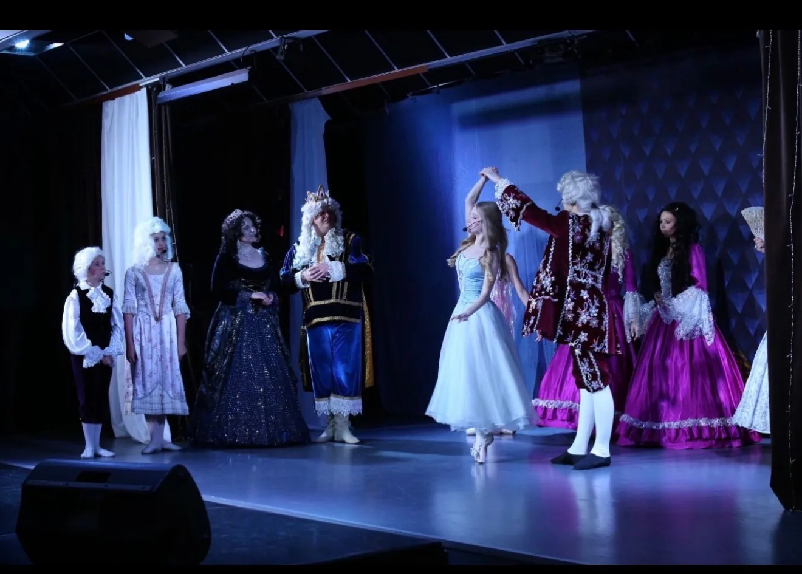
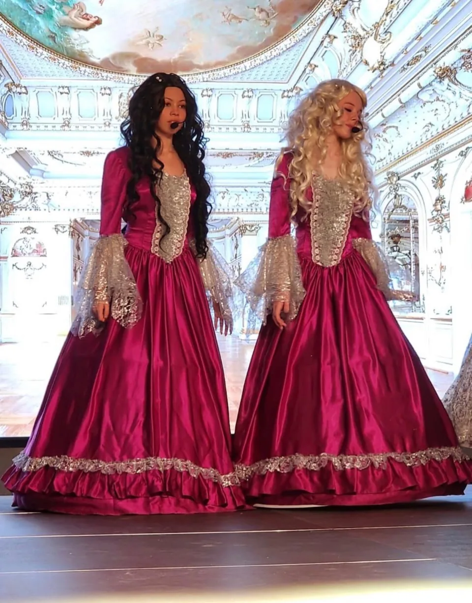
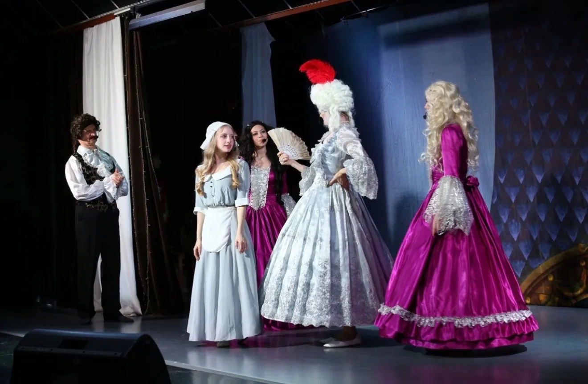
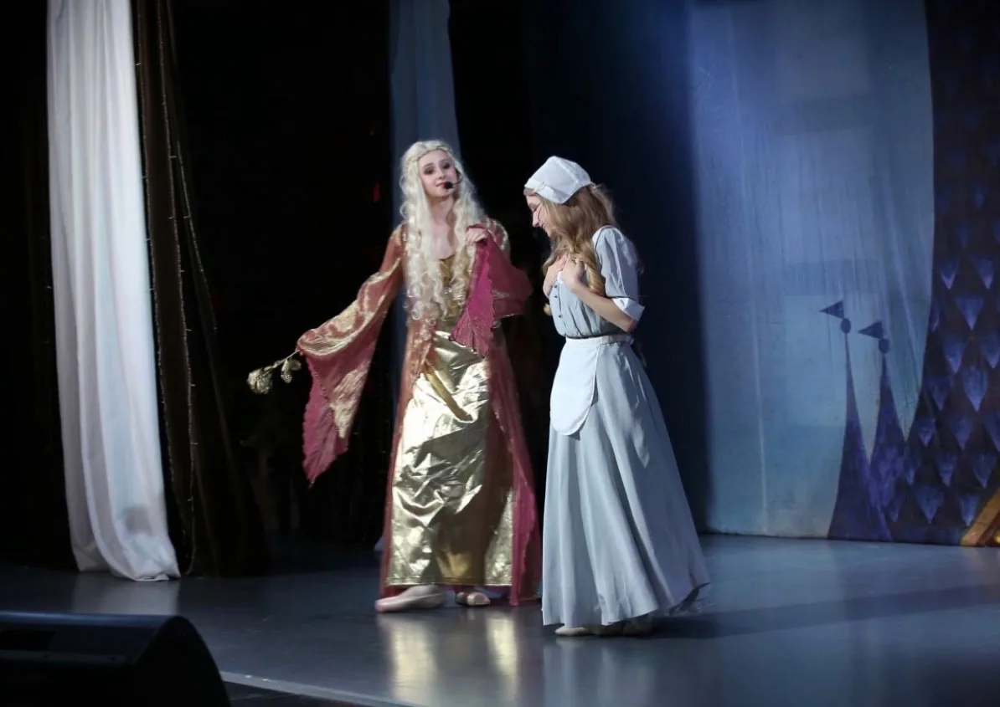
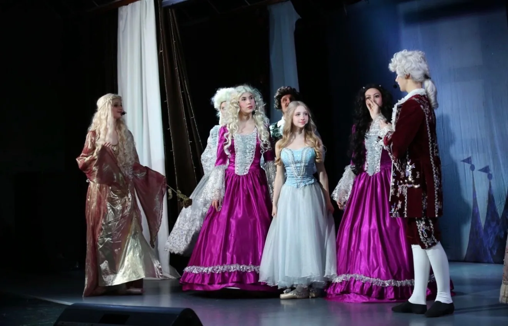
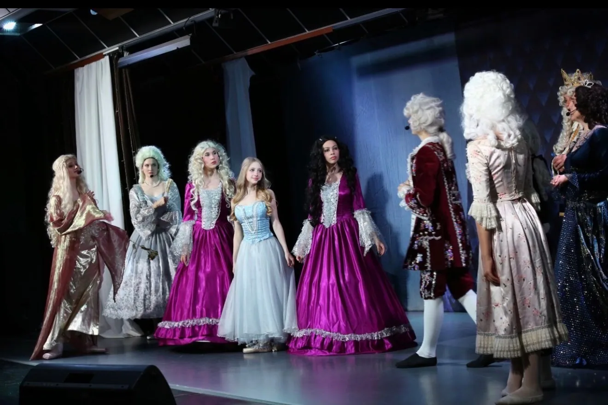
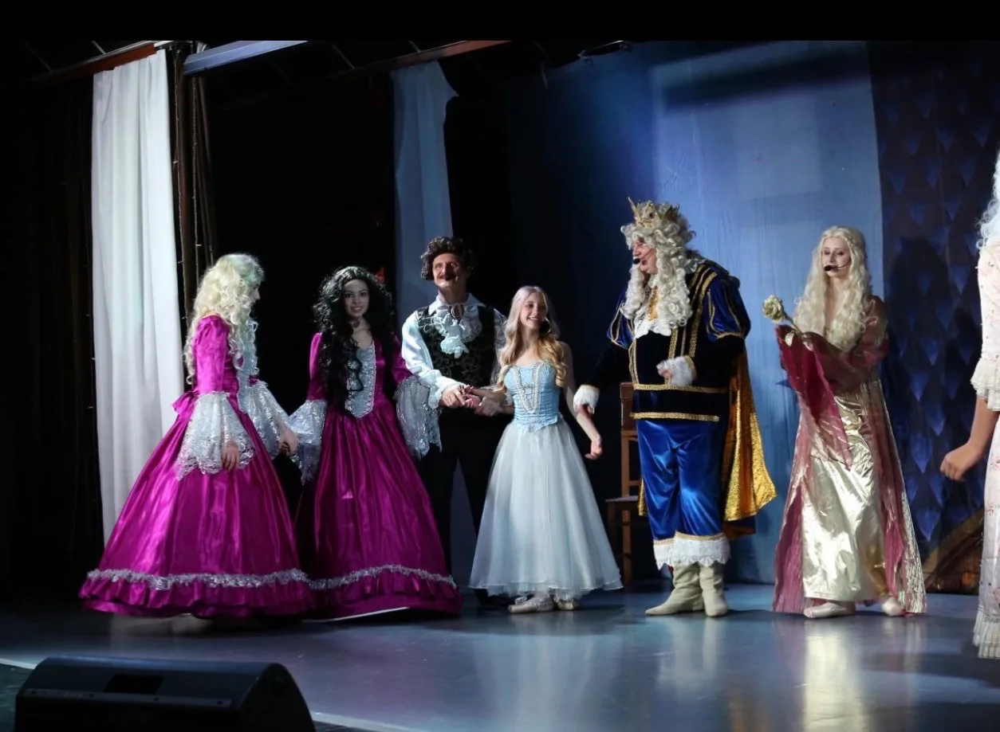

Спектакль
«Золушка»
Драматический спектакль с танцами Детского театра балета «Эльф».
Постановка по сказке Шарля Перро, которая идёт в репертуаре театра с 2010 года. Это история о доброте, скромности, волшебстве и о том, как добро побеждает зло.
- С 2010 года
- Для семейного просмотра
- Около 1 часа
- Одно действие
- Без антракта
О спектакле
«Золушка» в театре «Эльф»
«Золушка» появилась в репертуаре Детского театра балета «Эльф» в 2010 году и с тех пор сохраняется без изменения своей основной постановочной структуры.
Спектакль создан по сказке Шарля Перро.
В версии театра «Эльф» эта история существует как драматический спектакль с танцами, в котором действие развивается через сцену, характеры персонажей, пластику и хореографию.
За время существования постановки через неё прошло около трёх поколений воспитанников.
Для театра это спектакль о добром и вечном.
Постановка
Авторы спектакля
МузыкаСергей Сергеевич Прокофьев
Сценарий и режиссураНаталия Вячеславовна Борисова
Балетмейстер-постановщик и хореографияЕкатерина Викторовна Анисимова
КостюмыЕкатерина Викторовна Анисимова
Сценический мир
Постановка, созданная в «Эльфе»
Сохраняя основу сказки Шарля Перро, театр создаёт собственное сценическое решение спектакля.
Для этой постановки в «Эльфе» были созданы сценарий, режиссура, хореография, костюмы и пластические решения.
«Золушка» существует на сцене театра со своим ритмом, атмосферой и художественным образом.

Начало истории
Характеры, с которых начинается история
В спектакле важную роль играет мир, который окружает Золушку.
У каждого персонажа здесь свой характер, своё сценическое поведение и свой рисунок.
Особенно выразительно это проявляется в образах сестёр и домашнего круга, где с первых сцен становится виден контраст между внешней яркостью окружающего мира и скромностью Золушки.
Золушка
Добрая и скромная героиня
Для театра главное в образе Золушки — её доброта и скромность.
Она находится в обычном мире своей жизни ещё до бала и волшебного преображения.
Именно этот исходный образ нужен для того, чтобы дальнейшее изменение героини и сценического пространства стало особенно заметным.

Волшебство
Момент волшебного преображения
Одна из центральных сцен спектакля — появление Феи-крёстной и преображение Золушки.
Именно здесь история меняет своё направление: из привычного мира она переходит в пространство сказки, надежды и чуда.
Преображение меняет не только внешний образ героини — вместе с ним меняется и окружающий её сценический мир.


Главный танцевальный эпизод
Бал
Сцена бала является главным танцевальным эпизодом спектакля.
Именно здесь особенно ярко раскрываются авторская хореография, классический танец, массовые сцены, костюмы и театральная атмосфера постановки.
Здесь Золушка оказывается в новом для неё мире и встречает Принца.

Преображение
Новый образ героини
После преображения меняется не только костюм Золушки, но и весь окружающий её сценический мир.
Визуальный характер спектакля строится на переходе от начала истории к сказочному пространству бала — через костюмы, пластику, свет и общее ощущение праздника.
Именно это сценическое превращение становится одним из главных визуальных мотивов постановки.
Финал
Сказка, в которой добро побеждает
Финал спектакля сохраняет главное ощущение этой истории: добро побеждает зло.
Для театра важно, чтобы после финальной сцены оставалось чувство светлой сказки, в которой сохраняются волшебство, справедливость и вера в доброе начало.
«Золушка» подходит для семейного просмотра и обращена к зрителям разных возрастов.

Для зрителей
Для семейного просмотра
«Золушка» подходит для семейного просмотра и зрителей разных возрастов.
Продолжительность спектакля — около одного часа.
Он идёт в одном действии, без антракта.
Пробное занятие
Стать частью театра
Знакомство со сценой начинается с занятий.
Постепенно для тех воспитанников, которым интересна театральная и сценическая работа, обучение может привести к репетициям, ролям и участию в постановках театра.
Пробные занятия бесплатно.